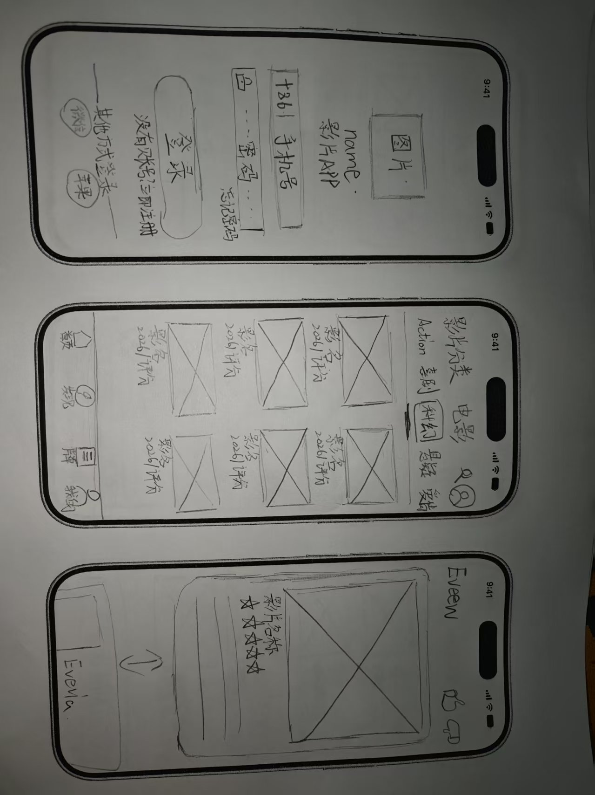

孙鑫宇 · 信息架构设计课程
Evevia 轻量化观影 App
打开观影应用时，有人已经决定了要看什么，有人只是想随手挑一部。Evevia 为这两种找片方式各留了一个入口，设计目标是让用户在三步内从找片进入播放。


从一次选片经历开始
在课程访谈中，一位习惯周末观影的受访者会先翻分类榜单，再结合简介和评分决定是否播放。中途离开后，通常靠观看记录找到上次的位置。这条路径给页面排序提供了依据：发现页帮人选片，详情页支持判断，历史记录负责续看。
首页应该先给用户看什么？
方案一 · 沉浸式探索
一次呈现一张影片卡片，单手滑动即可继续发现下一部。
方案二 · 传统导航
用底部导航和网格组织片库，让已有类型偏好的用户直接按分类查找。
方案三 · 社交互动
把影评和讨论放在发现路径上，为依赖口碑的用户提供选片依据。
最终原型采用方案一的滑动探索，也保留方案二的分类检索。想随意浏览时可以一直滑动，想看某一类影片时可以直接缩小范围。


从内容分类到页面跳转
树状图整理功能归属，任务图梳理用户操作，最后把每一步落到具体的原型页面。点击图像可查看原图。


观看原型演示
跟随原型录屏查看实际的页面切换和操作反馈。